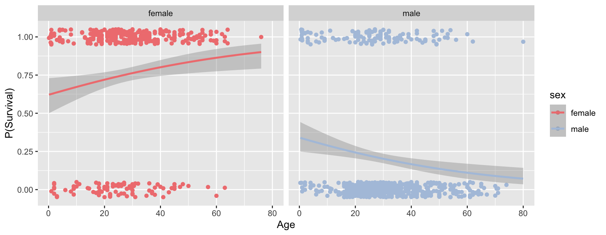

Chapter 24 Logistic regression
Logistic regression is used when the dependent variable is discrete (often binary). The explanatory variables may be either continuous or discrete.
Examples:
- Whether a gene is turned off (=0) or on (=1) as a function of levels of various proteins
- Whether an individual is healthy (=0) or diseased (=1) as a function of various risk factors.
- Whether an individual died (=0) or survived (=1) some selective event as a function of behavior, morphology, etc.
We model the binary response variable, \(Y\), as a function of the predictor variables, \(X_1\), \(X_2\), etc as :
\[ P(Y = 1|X_1,\ldots,X_p) = f(\beta_0 + \beta_1 X_1 + \beta_2 X_2 + \cdots + \beta_p X_p) \]
So we’re modeling the probability of the state of Y as a function of a linear combination of the predictor variables.
For logistic regression, \(f\) is the logistic function: \[ f(z) = \frac{e^z}{1+e^z} = \frac{1}{1 + e^{-z}} \]
Therefore, the bivariate logistic regression is given by: \[ P(Y = 1|X) = \frac{1}{1 + e^{-(\beta_0 + \beta_1 X)}} \]
Note that \(\beta_0\) here is akin to the intercept in our standard linear regression.
24.1 A web app to explore the logistic regression equation
To help you develop an intuition for the logistic regression equation, I’ve developed a small web app, that allows you to explore how the shape of the regression curve responds to changes in the regression coefficients \(\beta_0\) and \(\beta_1\). Open the app in another browser window and play with the sliders that control the coeffients \(B_0\) and \(B_1\). In the assignment associated with today’s class you’ll be asked to answer some specific questions based on this app.
24.2 Titanic data set
titanic.csv contains information about passengers on the Titanic. Variables in this data set include information such as sex, age, passenger class (1st, 2nd, 3rd), and whether or not they survived the sinking of the ship (0 = died, 1 = survived).
24.3 Subsetting the data
We’ve all heard the phrase, “Women and children first”, so we might expect that the probability that a passenger survived the sinking of the Titanic is related to their sex and/or age. Let’s create separate data subsets for male and female passengers.
24.4 Visualizing survival as a function of age
Let’s create visualizations of survival as a function of age for the male and female passengers.
fcolor = "lightcoral"
mcolor = "lightsteelblue"
female.plot <- ggplot(female, aes(x = age, y = survived)) +
geom_jitter(width = 0, height = 0.05, color = fcolor) +
labs(title = "Female Passengers")
male.plot <- ggplot(male, aes(x = age, y = survived)) +
geom_jitter(width = 0, height = 0.05, color = mcolor) +
labs(title = "Male Passengers")
plot_grid(female.plot, male.plot)
The jittered points with Y-axis value around one are passengers who survived, the point jittered around zero are those who died.
24.5 Fitting the logistic regression model
The function glm (generalized linear model) can be used to fit the logistic regression model (as well as other models). Setting the argument family = binomial gives us logistic regression. Note that when fitting the model the dependent variable needs to be numeric, so if the data is provided as Boolean (logical) TRUE/FALSE values, they should be converted to integers using as.numeric().
First we fit the regression for the famale passengers.
fit.female <- glm(survived ~ age, family = binomial, female)
tidy(fit.female)
#> # A tibble: 2 x 5
#> term estimate std.error statistic p.value
#> <chr> <dbl> <dbl> <dbl> <dbl>
#> 1 (Intercept) 0.4934 0.2542 1.941 0.05226
#> 2 age 0.02252 0.008535 2.638 0.008342The column “estimate” gives the coefficients of the model. The “intercept”" estimate corresponds to \(B_0\) in the logistic regression equation, the “age” estimate corresponds to the coefficient \(B_1\) in the equation.
Now we repeat the same step for the male passengers.
fit.male <- glm(survived ~ age, family = binomial, male)
tidy(fit.male)
#> # A tibble: 2 x 5
#> term estimate std.error statistic p.value
#> <chr> <dbl> <dbl> <dbl> <dbl>
#> 1 (Intercept) -0.6608 0.2248 -2.939 0.003290
#> 2 age -0.02376 0.007276 -3.266 0.001092Notice that the female coefficients are both positive, while the male coefficients are negative. We’ll visualize what this means in terms of the model below.
24.6 Visualizing the logistic regression
To visualize the logistic regression fit, we first use the predict function to generate the model predictions about probability of survival as a function of age.
ages <- seq(0, 75, 1) # predict survival for ages 0 to 75
predicted.female <- predict(fit.female,
newdata = data.frame(age = ages),
type = "response")
predicted.male <- predict(fit.male,
newdata = data.frame(age = ages),
type = "response")
Having generated the predicted probabilities of survival we can then add these prediction lines to our previous plot using geom_line.
female.logistic.plot <- female.plot +
geom_line(data = data.frame(age = ages, survived = predicted.female),
color = fcolor, size = 1)
male.logistic.plot <- male.plot +
geom_line(data = data.frame(age = ages, survived = predicted.male),
color = mcolor, size = 1)
plot_grid(female.logistic.plot, male.logistic.plot)
We see that for the female passengers, the logistic regression predicts that the probability of survival increases with passenger age. In contrast, the model fit to the male passengers suggests that the probability of survival decreases with passenger age. For the male passengers, the data is consistent with “children first”; for female passengers this model doesn’t seem to hold. However, there are other factors to consider as we’ll see below.
24.6.1 Quick and easy visualization
Here’s an alternative “quick and easy” way to generate the plot above using the awesome power of ggplot. The downside of this approach is we don’t generate the detailed information on the model, which is something you’d certainly want to have in any real analysis.
24.7 Impact of sex and passenger class on the models
In our previous analysis we considered the relationship between survival and age, conditioned (facted) on passenger sex. In a complex data set like this one, it is often useful to condition on multiple variables simultaneously. Lets extend our visualization to look at the regression faceted on both class and sex, using facet_grid:
ggplot(titanic, aes(x=age, y=survived, color=sex)) +
geom_jitter(width = 0, height = 0.05) +
geom_smooth(method="glm", method.args = list(family="binomial")) +
labs(x = "Age", y = "P(Survival)") +
facet_grid(pclass ~ sex) +
scale_color_manual(values = c(fcolor, mcolor)) +
theme_few()
Having conditioned on both sex and ticket class, our figure now reveals a much more complex relationship between age and survival. Almost all first class female passengers survived, regardless of age. For second calss female passengers, the logistic regression suggests a very modest decrease in survival with increasing age. The negative relationship between age and survival is stronger still for third class females. Male passengers on the other hand show a negative relationship between sex and survival, regardless of class, but the models suggest that there are still class specific differences in this relationship.
24.8 Fitting multiple models based on groupings use dplyr::do
In the figure above we used ggplot and facet_grid to visualize logistic regression of survival on age, conditioned on both sex and class. What if we wanted to calculate the terms of the logistic regressions for each combination of these two categorical variables? There are three passenger classes and two sexes, meaning we’d have to create six data subsets and fit the model six times if we used the same approach we used previously. Luckily, dplyr provides a powerful function called do() that allows us to carry out arbitrary computations on grouped data.
There are two ways to use do(). The first way is to give the expressions you evaluate in do() a name, in which case do() will store the results in a column. The second way to use do() is for the expression to return a data frame.
In this first example, the model fits are stored in the fits column. When using do() you can refer to the groupings using a period (.):
grouped.models <-
titanic %>%
group_by(sex, pclass) %>%
do(fits = glm(survived ~ age, family = binomial, data = .))
grouped.models
#> Source: local data frame [6 x 3]
#> Groups: <by row>
#>
#> # A tibble: 6 x 3
#> sex pclass fits
#> * <chr> <int> <list>
#> 1 female 1 <S3: glm>
#> 2 female 2 <S3: glm>
#> 3 female 3 <S3: glm>
#> 4 male 1 <S3: glm>
#> 5 male 2 <S3: glm>
#> 6 male 3 <S3: glm>Notice that the “fits” column doesn’t explicitly print out the details of the model. The object returned by glm() can’t be simply represented as text string (it’s a list), so we seea place holder string that tells us that there is data here represented a glm object. However, we can access the the columns with the fits just like any other variable:
# get the summary of the second logistic regression (Female, 2nd Class)
tidy(grouped.models$fits[[2]])
#> # A tibble: 2 x 5
#> term estimate std.error statistic p.value
#> <chr> <dbl> <dbl> <dbl> <dbl>
#> 1 (Intercept) 3.491 0.9037 3.863 0.0001119
#> 2 age -0.04502 0.02548 -1.767 0.07730Now we illustrate the second approach to using do(). When no name is provided, do() expects its expression to return a dataframe. Here we use the broom::tidy() function to get the key results of each fit model into a data frame:
titanic %>%
group_by(sex, pclass) %>%
do(tidy(glm(survived ~ age, family = binomial, data = .)))
#> # A tibble: 12 x 7
#> sex pclass term estimate std.error statistic p.value
#> <chr> <int> <chr> <dbl> <dbl> <dbl> <dbl>
#> 1 female 1 (Intercept) 2.896 1.238 2.339 0.01932
#> 2 female 1 age 0.009599 0.03263 0.2942 0.7686
#> 3 female 2 (Intercept) 3.491 0.9037 3.863 0.0001119
#> 4 female 2 age -0.04502 0.02548 -1.767 0.07730
#> 5 female 3 (Intercept) 0.2887 0.3412 0.8461 0.3975
#> 6 female 3 age -0.01783 0.01361 -1.310 0.1901
#> 7 male 1 (Intercept) 0.8803 0.5275 1.669 0.09514
#> 8 male 1 age -0.03743 0.01276 -2.934 0.003351
#> 9 male 2 (Intercept) 1.042 0.5990 1.740 0.08181
#> 10 male 2 age -0.1122 0.02492 -4.502 0.000006724
#> 11 male 3 (Intercept) -0.7613 0.3418 -2.228 0.02591
#> 12 male 3 age -0.03392 0.01339 -2.534 0.01129Using this approach we get a nice data frame showing the logistic regression coefficients, and associated statistics (standard error, P-values, etc) for the regression of survival on age, for each combination of sex and class.